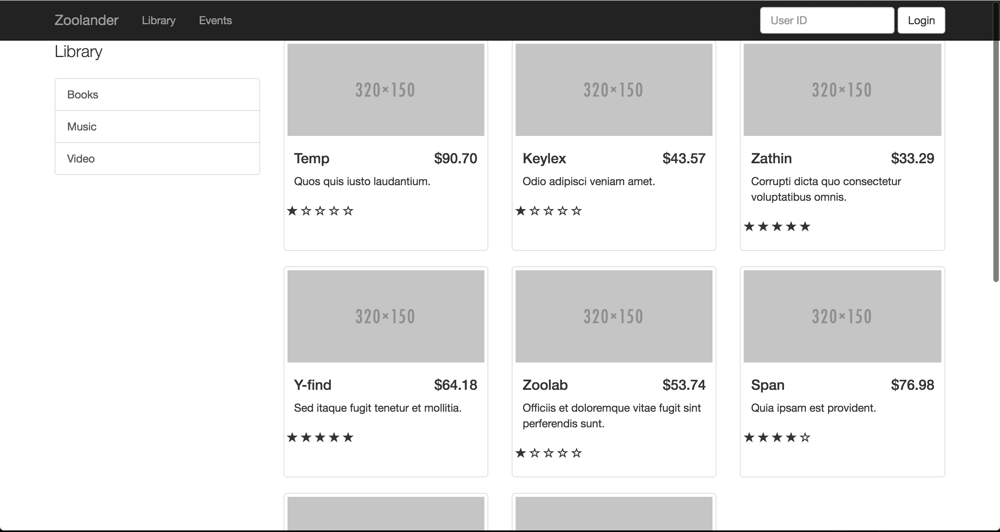

Building a Rails Engine
Joshua Dayan
Follow the presentation
About Me
- Application Developer at ej4, 2014 - present
- Web Developer at Monsanto, 2013
- Database Engineer at IBM, 2012
ej4, LLC
We're often asked if we're a video company or a learning company. To which we say, we're neither. We are a performance improvement company.
What is an engine
Engines can be considered miniature applications that provide functionality to their host applications.
A Rails application is actually just a "supercharged" engine, with the Rails::Application class inheriting a lot of its behavior from Rails::Engine.
Therefore, engines and applications can be thought of almost the same thing, just with subtle differences...
Agenda
Look at three examples of engines
- Hello, world!
- Using an engine for a single application
- Share an engine over two applications
Hello, World!
Setting it Up
rails plugin new hello_world -- mountable
...
create hello_world.gemspec
create lib/hello_world.rb
create lib/tasks/hello_world_tasks.rake
create lib/hello_world/version.rb
create lib/hello_world/engine.rb
vendor_app test/dummy
...
Setting it up
require 'hello_world/version'
Gem::Specification.new do |s|
s.name = 'hello_world'
s.version = HelloWorld::VERSION
s.authors = ['Joshua Dayan']
s.email = ['josh.dayan@ej4.com']
s.homepage = ''
s.summary = 'Summary of HelloWorld.'
s.description = 'Description of HelloWorld.'
s.license = 'MIT'
s.files = Dir['{app,config,db,lib}/**/*', 'MIT-LICENSE', 'Rakefile', 'README.rdoc']
s.test_files = Dir['test/**/*']
s.add_dependency 'rails', '~> 4.2.6'
s.add_development_dependency 'sqlite3'
end
hello_world.gemspec
Setting it up
module HelloWorld
VERSION = '0.0.1'.freeze
end
lib/hello_world/version.rb
module HelloWorld
class Engine < ::Rails::Engine
isolate_namespace HelloWorld
end
end
lib/hello_world/engine.rb
Setting it Up
bundle
cd test/dummy
rails s
Setting it up
We are looking at a blank host application.
How do we mount our engine?
Rails.application.routes.draw do
mount HelloWorld::Engine => '/hello_world'
end
test/dummy/config/routes.rb
Seeing our engine
Navigate to localhost:3000/hello_world
Why?
Setting our routes
HelloWorld::Engine.routes.draw do
end
config/routes.rb
We need to set a default route.
Engines don't have default pages like rails applications do.
HelloWorld::Engine.routes.draw do
root 'welcome#index'
end
config/routes.rb
Creating a root path
module HelloWorld
class WelcomeController < ApplicationController
def index
end
end
end
app/controllers/hello_world/welcome_controller.rb
Hello, world!
app/views/hello_world/welcome/index.html.erb
Seeing Hello, World!
Recap
- An engine is essentially a rails application that needs to be mounted on a host application.
- Which is done using the
mountcommand in theconfig/routes.rbfile. - Engines are namespaced
- Share the same model/controller/view names as the host application
Real Project
Commissioned by "The Derek Zoolander Center For Kids Who Can't Read Good And Wanna Learn To Do Other Stuff Good Too”
Feature Requests
- Basic Information
- Mission Statement
- About Us Information
- Contact Information
- Calender of events
- Display of their inventory
- Books
- Movies
- Music
Basic Information
Calender of events
Display of inventory
New Feature - Users
Users need to be able to...
- Log into the site (obviously)
- Register for events
- Checkout items
- Pay fees
- Library fines
- Registration fees
- Buy items
Loggin onto the site
Registering for events
Checking out items
New Feature - Admin Section
Administration companion to the regular site
Center admins need to be able to monitor all user activity
How to approach the problem
Add the admin functionality directly to the app
Obvious solution
Or is it?
Either way, let's implement it
Creating the routes
Two options
Scope or Namespace
Scope
Rails.application.routes.draw do
...
scope '/admin', module: 'admin' do
resources :users, only: [:index]
end
...
end
zoolander/config/routes.rb
'/admin/users' => 'admin/users#index'
Namespace
Rails.application.routes.draw do
...
namespace :admin do
resources :users, only: [:index]
end
...
end
zoolander/config/routes.rb
'/admin/users' => 'admin/users#index'
Creating the controller
module Admin
class UsersController < ApplicationController
def index
@users = User.all
end
...
def destroy
User.find(params[:id]).destroy
redirect_to admin_users_path,
notice: 'User has been successfully destroyed.'
end
end
end
zoolander/app/controllers/admin/users_controller.rb
Creating the view
...
<% @users.each do |user| %>
<% # Display the user %>
<% end %>
...
zoolander/app/views/admin/users/index.html.erb
The result
Navigate to localhost:3000/admin/users

So, what's the problem?
The Problem
We have created a coupling between normal users and admins.
We have two distinct sections of code that live in the same application.
These sections have seperate end users, with seperate functionality, so they should exist in seperate locations.
Why is that bad?
It might not be from a users perspective, but it from a developer's.
We are creating complication that will increase as the project expands.
The better solution
(And the whole point of this talk)
Using an engine
Admin Engines
A simple search on github shows over 2,000 ruby projects with the name admin.
It's an easy place to start.
Creating the engine
Step one, remove the existing admin code
rm zoolander/app/controllers/admin/*
rm zoolander/app/views/admin/*
Creating the engine
Step two, add the engine
Development
gem 'admin', path: '/path/to/project'
zoolander/Gemfile
Production
gem 'admin', '0.0.1'
zoolander/Gemfile
Creating the engine
Step three, replacing the routing logic
Rails.application.routes.draw do
...
namespace :admin do
resources :users, only: [:index]
end
...
end
zoolander/config/routes.rb
Rails.application.routes.draw do
...
mount Admin::Engine => '/admin'
...
end
zoolander/config/routes.rb
Creating the engine
Step four, move existing logic to the new engine
rails plugin new admin --mountable
cp admin/app/controllers/admin/*
cp admin/app/views/admin/*
cp admin/app/assets/*
Admin::Engine.routes.draw do
resources :users
end
admin/config/routes.rb
The result
(the same)
Let's look at a more complicated example...
New Project
What we currently have
Getting started
We will start by copying over our existing views and controller setups to a new project.
rails new congress
cp zoolander/app/controllers/items_controller.rb
cp zoolander/app/views/items/index.html.erb
Set up the routes
Rails.application.routes.draw do
root to: 'documents#index'
get '/catalog' => 'documents#index'
end
congress/config/routes.rb
Set up the controllers
class DocumentsController < ApplicationController
def index
@documents = Document.all
end
end
congress/app/controllers/documents_controller.rb
Set up the views
...
Catalog
...
<% @documents.each do |document| %>
<% # Display the document %>
<% end %>
...
congress/app/views/documents/index.html.erb
The result
Move to an engine
Similar reasons as before, only now we are trying to solve a duplication problem.
Follow the same steps as before.
Move to an engine
Like before, copy duplicated code to a new engine.
rails plugin new catalog --mountable
cp zoolander/app/controllers/items_controller.rb
cp zoolander/app/views/items/index.html.erb
cp congress/app/controllers/documents_controller.rb
cp congress/app/views/documents/index.html.erb
Rename routes
mount Catalog::Engine => '/library'
zoolander/config/routes.rb
mount Catalog::Engine => '/catalog'
congress/config/routes.rb
Add gems
gem 'catalog',
path: '/Users/joshdayan/Projects/building_a_rails_engine_2016/catalog'
zoolander/Gemfile
gem 'catalog',
path: '/Users/joshdayan/Projects/building_a_rails_engine_2016/catalog'
congress/Gemfile
The result
(the same)
New problems to consider
What if catalog users wanted to use seperate models?
What if those models had different attributes?
Recap
- Engines are basically normal rails applications
- Engines are namespaced and use seperate assets